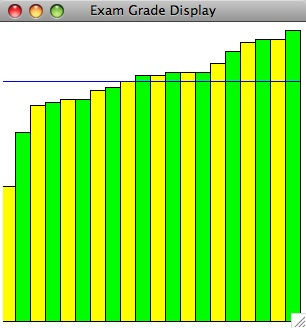

15-105 SPRING 2009 [CORTINA]
HOMEWORK 11 - due Friday, May 1
WRITTEN PROBLEMS (5 pts)
Hand these problems in on paper in class on the due date specified.
- (1 pt)
-
Encode the message "CHEYENNE WYOMING" using a Caesar cipher with a shift
of +8.
-
Decode the message "ZKZM STQHMF" that was
encoded using a Caesar cipher and give
the shift value that was used to encode the message. HINT: The first
word contains 2 vowels.
- (1 pt)
Consider the following public encryption rules for messages used by
Alice, Bob and Carol:
ALICE:
A B C D E F G H I J K L M N O P Q R S T U V W X Y Z
encodes to:
Z A Y B X C W D V E U F T G S H R I Q J P K O L N M
BOB:
A B C D E F G H I J K L M N O P Q R S T U V W X Y Z
encodes to:
Q W E R T Y U I O P A S D F G H J K L Z X C V B N M
CAROL:
A B C D E F G H I J K L M N O P Q R S T U V W X Y Z
encodes to:
M L P N K O B J I V H U C G Y X F T Z D R S E A W Q
The private decryption rules are just the inverses of the
encryptions shown above.
-
Alice wants to send the message "MEET ME AT SEVEN" to Bob without a
signature. What message does she send to Bob?
-
Carol wants to send the message "MEET ME AT EIGHT" to Bob so that Bob
knows it came from her. What message should Carol send to Bob?
- (1 pt)
The Loebner Prize for Artificial Intelligence was awarded in 2008 to Fred
Roberts and Artificial Solutions. They created an online "bot" called
Elbot. Hold a conversation with Elbot and describe some of its responses
to your comments and questions.
How well did it simulate intellect in your opinion? Were
some answers better than others? Give an example.

- (2 pts)
In the game of Connect Four, the play area consists of a
vertical grid of 6 rows and 7 columns. Players alternate turns,
dropping a single checker into one of the columns. The
checker will slide down as far as it can go. The object is to be
the first player to get four checkers in a straight line
(horizontally, vertically or diagonally). We wish to build a
game tree that analyzes all the available moves in the game to
find the best move.

-
Starting with a root node that represents an empty
grid, how many nodes will be on the first level of the
game tree below the root?
-
How many nodes will be at the second level of the game tree below the
root?
-
At what level would the first leaf of the game tree occur? Why?
- Why would a computer use a heuristic to determine its move rather than
a game tree?
COMPUTER PROBLEM (5 pts)
Hand this in electronically using the
Electronic Handin System by 11:59PM on the due
date indicated.
Write a complete Python program that reads in 20 exam scores from a file,
sorts these grades into increasing order,
and displays a bar graph in a 300 X 300 window showing the grades
in increasing order as
vertical bars (alternating yellow and green, starting with yellow)
where each bar's height is proportional to the corresponding grade
along with
a blue horizontal line
that shows the average grade. The grades are stored one per line in the
file. All grades are between 0 and 100.
A sample result is shown below (the blue line is the average):

Sample data file: examdata.txt
Here is a main function for you to start with:
def main():
win = GraphWin("Exam Grade Display", 300, 300)
filename = raw_input("Input filename: ")
grades = readGrades(filename)
grades = sort(grades)
average = computeAvg(grades)
drawBars(win, grades)
drawLine(win, average)
print grades
print "AVERAGE =", average
raw_input("Press ENTER to quit.")
win.close()
Write separate functions for each of the following steps:
-
Read in the data from the file into an array.
Parameter: The name of the file to open.
Return: The array with the grades in it.
-
Sort the data in the array.
Parameter: The array with the grades in it.
Return: The array with the grades in it after it is sorted.
-
Compute and return the average of the values in the array
Parameter: The array with the grades in it.
Return: The average of the grades in the array.
-
Draw the bars of the graph.
Parameters: The window to draw in and the array with the grades in it.
Return: nothing
-
Draw the horizontal line on the graph for the average grade.
Parameters: The window to draw in and the average grade.
Return: nothing